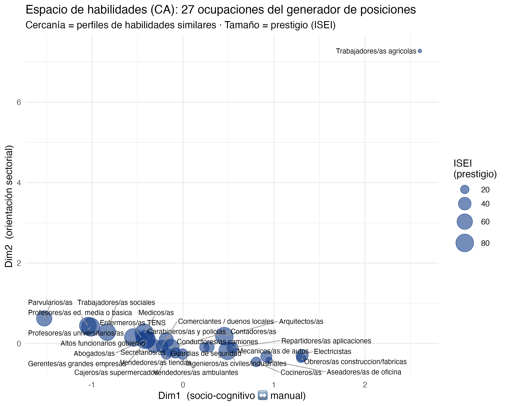
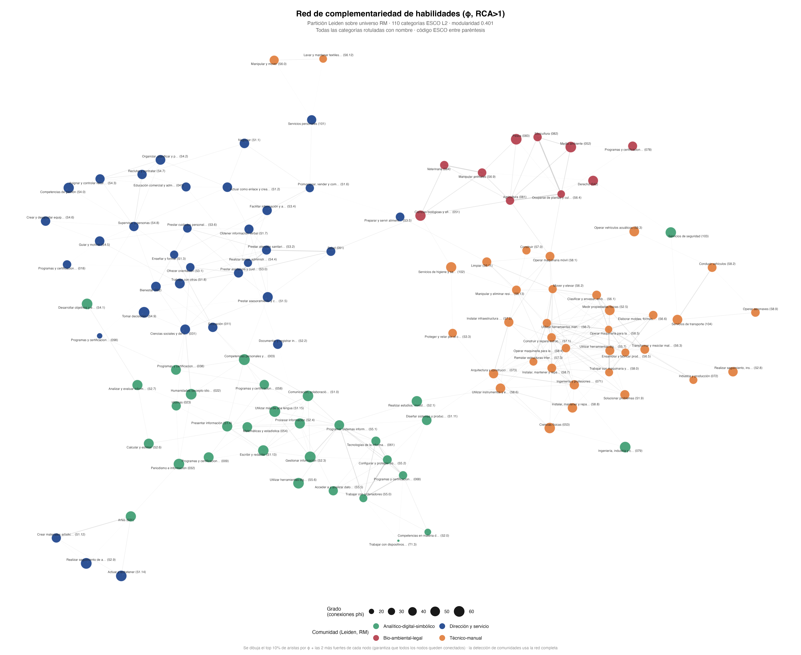

Trajan Pirkovic Palma1 2
1Instituto de Sociología, Pontificia Universidad Católica de Chile
2Fondecyt: Class, personal networks and political attitudes
Comisión de tesis · Estado de avance
Profesora Guía: Andrea Canales
Profesor Co-Tutor: Gabriel Otero
19 de agosto 2026
En síntesis: misma pregunta, diseño más afinado. Lo que sigue son los resultados con esta versión.

Si el contenido de habilidades no es una copia del prestigio, la forma en que las personas se conocen también podría organizarse por ese contenido, no solo por estatus. Esa es la apuesta de la tesis.
El ISEI no distingue eso; el contenido de habilidades sí.
→ La homofilia de habilidades puede ser una dimensión autónoma de clausura relacional, distinta de la clausura por estatus que ya documenta la literatura chilena.
P1 (estructural): ¿cómo se organiza el espacio de habilidades de las ocupaciones, y en qué medida coincide o diverge de la jerarquía de prestigio?
P2 (relacional): ¿la composición de habilidades de las redes personales varía según clase de origen, y se asocia con el perfil del ego y con el cierre de su red, más allá del prestigio?
| Hipótesis | |
|---|---|
| H1 | Se conoce a más gente en ocupaciones con habilidades parecidas a las propias, más allá del prestigio |
| H1b | Esa homofilia de habilidades varía según el nivel educativo del ego |
| H2 | Quienes vienen de origen social más alto tienen redes con habilidades más diversas |
| H3 | La composición de comunidades de habilidades de la red corresponde a la de la ocupación del ego, por sobre el prestigio de la red |
| H4 | Quienes vienen de origen social más alto tienen redes con menor cierre estructural |
| Fuente | Qué aporta |
|---|---|
| Encuesta Fondecyt | Egos y redes: N = 1.251, RM. Generador de posiciones, 27 ocupaciones (Q0101-Q0127) |
| ESCO (versión es) | Catálogo de habilidades: ~3.000 ocupaciones, 110 categorías (nivel L2) |
| ISCO-08 | Puente entre fuentes: código ocupacional de egos, alters y padres |
| Ganzeboom (2010) | Prestigio: tabla oficial ISEI-08, 590 códigos |
| CASEN 2024 | Universo ocupacional de la RM y peso poblacional de cada ocupación |
El generador de posiciones pregunta, para 27 ocupaciones: “¿a cuántas personas conoces que trabajen en esto?” (Lin & Dumin, 1986). Egos con ocupación válida y match ISCO: n = 978-975 según el modelo.
| Indicador | Nombre en esta presentación | Qué mide |
|---|---|---|
SH_ip |
Similitud de habilidades ego-posición | Cercanía en el mapa de habilidades entre la ocupación de ego y cada posición del generador |
SP_ip |
Similitud de prestigio ego-posición | Cercanía en ISEI entre ego y cada posición, el contraste clásico |
Div_Red |
Amplitud de habilidades de la red | Cuántas áreas de habilidad distintas cubre el repertorio agregado de la red |
share_comX_red / share_comX_ego |
Peso de cada comunidad en la red / en ego | Proporción del repertorio de habilidades que cae en cada una de las 4 comunidades |
SP_red_ego |
Proximidad de prestigio red-ego | Control crítico de H3: descarta que la correspondencia sea de estatus |
cierre_blando |
Cierre estructural | Cuánto se solapa el perfil de habilidades de ego con el de su red, ponderado por contactos |
Ext · Rango_P · Estatus_Max |
Extensión · Rango de prestigio · Estatus máximo | Los tres indicadores clásicos del generador de posiciones, usados como controles/contraste |
¿Cómo se organiza el espacio de habilidades de las ocupaciones, y en qué medida coincide o diverge de la jerarquía de prestigio?
Robustez (nota al pie): el hallazgo se replica vía bootstrap sobre reordenamientos de ocupaciones y frente a distintos umbrales de phi; no se detalla aquí por tiempo.
| Par de ocupaciones | Comunidad | Habilidades esenciales compartidas | Ejemplos |
|---|---|---|---|
| Veterinario/a general ↔︎ Ganadero/a | Bio-ambiental-legal | 7 de 53 / de las de ganadero/a | Bioseguridad animal; primeros auxilios a animales; higiene animal; controlar el movimiento de animales |
| Desarrollador/a de software ↔︎ Ingeniero/a de aplicaciones | Analítico-digital-simbólico | 16 de 24 | Programación informática; identificar requisitos del cliente; analizar especificaciones de software |
| Ingeniero/a civil ↔︎ Ingeniero/a de automatización | Técnico-manual | 14 de 30 | Modificar diseños técnicos; dibujos técnicos; gestionar datos de investigación |
| Médico/a generalista ↔︎ Kinesiólogo/a | Dirección y servicio | 8 de 10 | Sintetizar información; evaluar condiciones físicas de clientes; conocimientos especializados de disciplina |
Este es el mecanismo detrás de phi: dos ocupaciones “aparentemente” distintas resultan cercanas en el mapa porque comparten un tramo real de su lista de habilidades esenciales ESCO — no por pertenecer al mismo rubro o nivel de prestigio. Veterinario/a y ganadero/a están a ~35 puntos de ISEI de distancia, y aun así comparten un tercio de las habilidades del segundo.
| Ocupación | Comunidad | Algunas habilidades esenciales (ESCO) |
|---|---|---|
| Médico/a generalista | Dirección y servicio | Proporcionar asistencia sanitaria general; evaluar condiciones físicas de pacientes; supervisar desarrollo físico de niños |
| Ingeniero/a civil | Técnico-manual | Ingeniería civil; supervisar proyecto de construcción; garantizar cumplimiento de legislación de seguridad; coordinarse con arquitectos |
| Desarrollador/a de software | Analítico-digital-simbólico | Programación informática; depurar software; desarrollar prototipo de software; usar patrones de diseño de software |
| Veterinario/a general | Bio-ambiental-legal | Fundamentos de ciencias veterinarias; legislación sobre bienestar de los animales; realizar diagnósticos veterinarios; recetar medicamentos veterinarios |
Cada ocupación de ESCO trae su propia lista de habilidades esenciales — esta tabla es la unidad básica sobre la que se construye todo el mapa. La habilidad veterinaria “legislación sobre bienestar animal” ya es, en sí misma, la conexión regulatoria que explica por qué Derecho aparece junto a Agricultura y Veterinaria en la comunidad Bio-ambiental-legal.

| Comunidad | Qué agrupa |
|---|---|
| Dirección y servicio | Trabajo sobre personas: coordinar, atender, enseñar, vender. Salud, bienestar, educación, ciencias sociales; gestión y cuidado |
| Técnico-manual | Trabajo sobre objetos y materia: construir, operar, reparar, transportar. Ingeniería, construcción, industria |
| Analítico-digital-simbólico | Trabajo sobre información y símbolos: programar, analizar, escribir. TIC, matemáticas, artes, humanidades, idiomas |
| Bio-ambiental-legal | Trabajo sobre organismos vivos y su marco regulatorio. Derecho, biología, ambiente, agricultura, silvicultura, pesca, veterinaria |
Red de complementariedad phi (RCA>1), partición Leiden sobre el universo RM · 110 categorías ESCO L2 · modularidad 0,401
El caso llamativo es la cuarta: el derecho aparece junto a agricultura y veterinaria, no junto a lo analítico-digital. ESCO codifica el conocimiento jurídico-regulatorio (normativa fitosanitaria, ambiental, de inocuidad) como habilidad esencial en ocupaciones agropecuarias y sanitarias. Eso vincula al veterinario con el trabajador agrícola por contenido, aunque estén separados por decenas de puntos de ISEI.
| Ocupación (posición GP) | ISEI | share Dir.-serv. | share Téc.-man. | share Analít.-dig. | share Bio-amb.-legal |
|---|---|---|---|---|---|
| Parvularios/as (Q0124) | 58,8 | 84,6% | 0% | 15,4% | 0% |
| Electricistas (Q0119) | 36,4 | 8,3% | 91,7% | 0% | 0% |
| Médicos/as (Q0114) | 88,7 | 25,0% | 0% | 75,0% | 0% |
| Ingenieros/as civiles/industriales (Q0105) | 79,1 | 17,2% | 51,7% | 31,0% | 0% |
| Trabajadores/as agrícolas (Q0110) | 11,6 | 21,4% | 28,6% | 7,1% | 42,9% |
Fuente: shares_comunidad_generador_posiciones.csv (script 08), imputación de comunidades a nivel de ocupación aplicada a las 27 posiciones del generador.
Cada posición del generador ya trae una composición de comunidades, no una etiqueta única: esto es lo que permite comparar el perfil de habilidades de ego contra el de su red en H3. El caso de médicos/as es revelador: pese a trabajar sobre personas, ESCO codifica su núcleo de habilidades esenciales como predominantemente analítico-digital-simbólico (diagnóstico, síntesis de información clínica), no dirección-servicio. Trabajadores/as agrícolas es la única posición GP con peso relevante en bio-ambiental-legal — y la de menor ISEI de las cinco.
| Comunidad | n categorías | ISEI medio | ISEI DE | phi intra-comunidad |
|---|---|---|---|---|
| Dirección y servicio | 34 | 60,4 | 9,7 | 0,096 |
| Técnico-manual | 35 | 30,3 | 9,5 | 0,147 |
| Analítico-digital-simbólico | 31 | 54,2 | 7,9 | 0,134 |
| Bio-ambiental-legal | 10 | 29,8 | 18,9 | 0,244 |
Valores de la partición Leiden vigente (universo RM). Fuente: caracterizacion_comunidades.csv (script 08, 19-ago-2026).
Bio-ambiental-legal es simultáneamente la comunidad más cohesionada en habilidades (mayor phi intra-comunidad) y la más dispersa en estatus (mayor desviación estándar de ISEI) de las cuatro.
¿La composición de habilidades de las redes personales varía según clase de origen, y se asocia con el perfil del ego y con el cierre de su red, más allá del prestigio?
\[\log(\mu_{ip}) = \beta_0 + \beta_1\,SP_{ip} + \beta_2\,SH^{red}_{ip} + \beta_3\,Educ_i + \beta_4\,(SH^{red}_{ip}\times Educ_i) + \beta_5\,TamGrupo_p + \beta_6\,Sexo_i + \beta_7\,Edad_i + u_i\] \[n\_conocidos_{ip} \sim \text{BinomNeg}(\mu_{ip}, \theta) \qquad u_i \sim N(0,\, \sigma^2_u)\]
\(i\) = ego, \(p\) = posición del generador (1 a 27) · \(u_i\) = intercepto aleatorio por ego · \(\theta\) = parámetro de sobredispersión
| Indicador | Qué mide | Cómo se calcula |
|---|---|---|
SP_ip |
Similitud de prestigio ego-posición | −|ISEI_ego − ISEI_p|: distancia en ISEI entre la ocupación de ego y la posición, invertida |
SH_ip_red (principal) |
Similitud de habilidades ego-posición, en red | −promedio de distancias geodésicas, ponderadas por φ, entre las categorías esenciales (RCA>1) de la ocupación de ego y las de la posición — sobre la misma red de complementariedad que produce las 4 comunidades Leiden |
SH_ip_com (sensibilidad) |
Similitud de habilidades, por perfil de comunidad | similitud de coseno entre el vector de 4 shares de comunidad (share_com1..4) de ego y el de la posición |
SH_ip_red reemplaza aquí al indicador construido sobre coordenadas del CA: usa la misma estructura de red que ya sostiene el hallazgo de comunidades (bio-ambiental-legal), en vez de una reducción dimensional distinta. SH_ip_com se reporta como chequeo de sensibilidad — misma red, pero colapsada a 4 categorías en vez de 110.
H1: se conoce a más gente en ocupaciones con habilidades parecidas a las propias, más allá del prestigio. H1b: esa homofilia varía según educación.
| M0: solo prestigio | M1: + habilidades red (H1) | M2: + interacción educ. (H1b) | |
|---|---|---|---|
| Similitud de prestigio (SP_ip) | 0,021*** | 0,018*** | 0,018*** |
| Similitud de habilidades, red (SH_ip_red) | — | 1,147*** | 2,576*** |
| Educación | 0,144*** | 0,134*** | −0,143** |
| Habilidades (red) × educación | — | — | −0,227*** |
| Tamaño del grupo ocupacional | 7,224*** | 8,721*** | 7,984*** |
| Sexo (mujer) | 0,040 (n.s.) | 0,034 (n.s.) | 0,036 (n.s.) |
| Edad | 0,003 (n.s.) | 0,002 (n.s.) | 0,003 (n.s.) |
n = 26.325 díadas ego-posición en M1/M2 (975 egos); M0 usa 26.379 · binomial negativa multinivel, intercepto por ego
Coeficientes de la reconstrucción en R5 (robustez); la escala difiere de la especificación CA mostrada anteriormente (SP_ip pasa de 0,440 a 0,021) — pendiente verificar contra 05_modelos.R antes de reportar como definitivo.
H1 se sostiene: SH_ip_red predice conocidos controlando por prestigio (1,147***), y SP_ip se mantiene estable al agregarla: miden cosas distintas.
H1b se sostiene: la interacción habilidades×educación es significativa (−0,227***), y se replica con SH_ip_com (−0,130***) — misma dirección y significancia con las dos versiones del indicador de red.
SH_ip_red = 0, fuera del rango observado (todas las distancias son negativas). Su cambio de signo respecto a M0/M1 es un artefacto de la interacción no centrada, no una reversión del efecto de educaciónSH_ip_com (perfil de comunidad) da 0,427*** en M1 y −0,130*** en la interacción de M2H2: quienes vienen de origen social más alto tienen redes con habilidades más diversas (VD: Div_Red, amplitud de habilidades de la red).
| Predictor | Coef. | p |
|---|---|---|
| Clase de origen (ISEI del padre/sostenedor) | −0,002 | 0,190 (n.s.) |
| Educación del ego | 0,063 | <0,001 *** |
| Extensión de la red (Ext) | −0,006 | <0,001 *** |
| Rango de prestigio de la red | 0,058 | <0,001 *** |
| Estatus máximo de la red | −0,011 | 0,095 (.) |
n = 978 · svyglm ponderado por diseño muestral
H2 no se sostiene. La clase de origen no predice la amplitud de habilidades de la red una vez controlado por los indicadores clásicos: lo que sí la predice es el rango de prestigio de la red, no el origen social del ego. Es un resultado informativo: dice que la diversidad de habilidades de la red se explica por la composición de prestigio de esa red, no por de dónde viene el ego.
H3: el peso de cada comunidad en la red corresponde al peso de esa misma comunidad en la ocupación de ego, controlando por proximidad de prestigio red-ego (SP_red_ego).
| Comunidad | Coef. share_red → share_ego | p | SP_red_ego (control) |
|---|---|---|---|
| Dirección y servicio | 0,561 | <0,001 *** | n.s. (p=0,886) |
| Técnico-manual | 0,459 | <0,001 *** | n.s. (p=0,416) |
| Analítico-digital-simbólico | 0,370 | 0,003 ** | n.s. (p=0,402) |
| Bio-ambiental-legal | 0,222 | 0,007 ** | n.s. (p=0,522) |
n = 931 · cuatro svyglm paralelos, uno por comunidad, con los mismos controles (educ., origen, sexo, edad, indicadores clásicos)
H3 se sostiene en las cuatro comunidades. SP_red_ego no es significativo en ninguna: la correspondencia de contenido entre red y ego no se reduce a proximidad de prestigio. Gradiente descendente (0,56 → 0,22): la correspondencia es más fuerte donde el generador tiene más posiciones para esa comunidad — limitación del instrumento a declarar, no artefacto sustantivo.
H4: origen social más alto → menor cierre estructural.
| Predictor | H4 lineal | H4 cuadrático (robustez) |
|---|---|---|
| Clase de origen (ISEI) | −0,0002 (n.s., p=0,304) | −0,0001 (n.s.) |
| Educación | −0,0070*** | −0,0070*** |
n = 931 · VD: cierre_blando · el chequeo de colinealidad previo (r = −0,30 con Div_Red) permite reportar ambos modelos por separado sin problema
H4 no se sostiene (ni lineal ni forma de U): el origen social no predice el cierre estructural. Lo que sí lo predice es la educación (a mayor educación, menor cierre) — hallazgo no hipotetizado pero sustantivo.
| Hipótesis | Estado | Evidencia | |
|---|---|---|---|
| H1 | Homofilia de habilidades más allá del prestigio | Se sostiene | SH_ip_red = 1,147***; SP_ip se mantiene estable al incluirla |
| H1b | La homofilia varía según educación | Se sostiene | Interacción −0,227*** (SH_ip_red); se replica con SH_ip_com |
| H2 | Origen social → red más diversa | No se sostiene | ISEI de origen n.s. (p=0,190); predicen los indicadores clásicos |
| H3 | Composición de comunidades: red ↔︎ ego | Se sostiene, en las 4 comunidades | SP_red_ego n.s. en las cuatro |
| H4 | Origen social → menor cierre estructural | No se sostiene | ISEI de origen n.s.; predice la educación |
Lectura de conjunto: el contenido de habilidades no es una forma más de medir prestigio — en H1 y H3 ambas dimensiones coexisten sin canibalizarse, y H3 es el hallazgo más sólido de la tesis. H2 y H4 (los efectos del origen social) no se sostienen tal como se plantearon: el origen parece pesar menos que la propia posición actual en el mercado laboral.
svydesign() usa ids=~1 (muestra ponderada simple) como especificación provisoria; falta incorporar estratos/conglomerados de FondecytTrajan Pirkovic Palma
Instituto de Sociología, Pontificia Universidad Católica de Chile